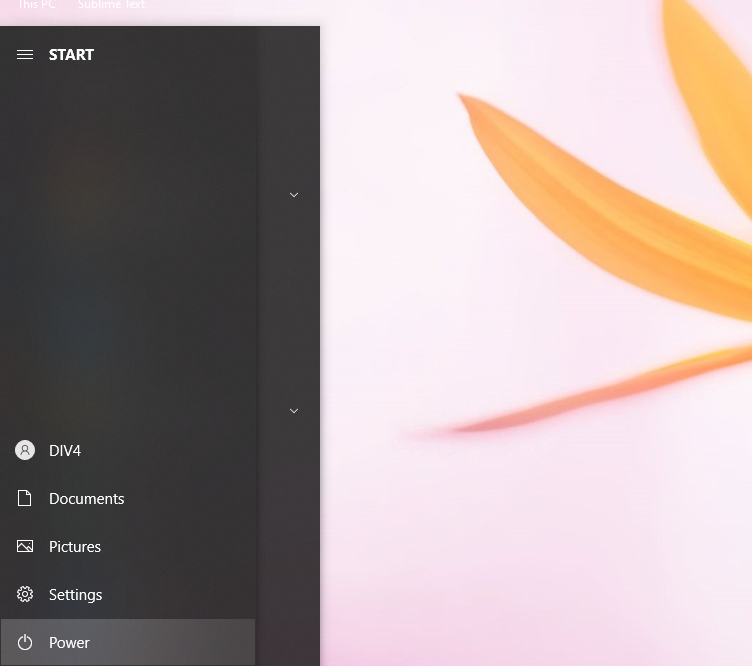
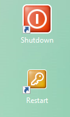
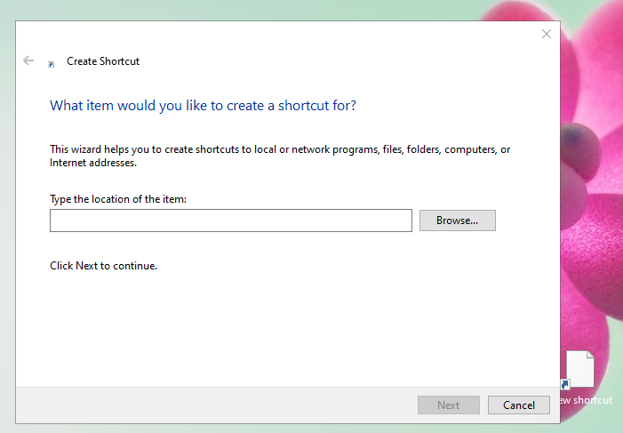
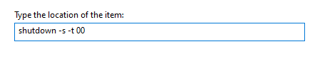
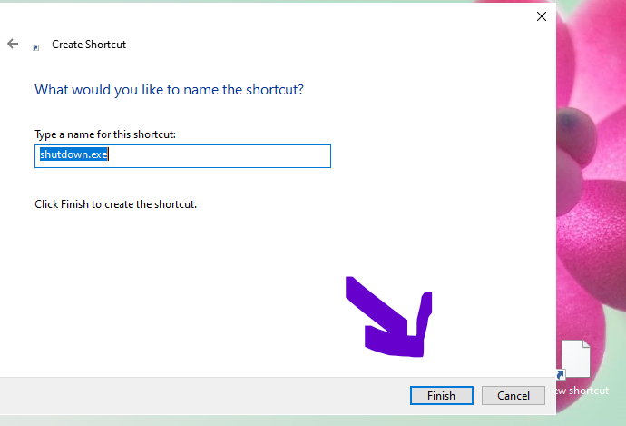
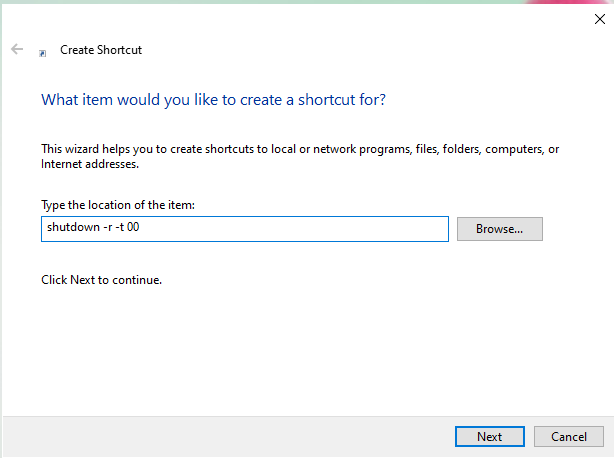
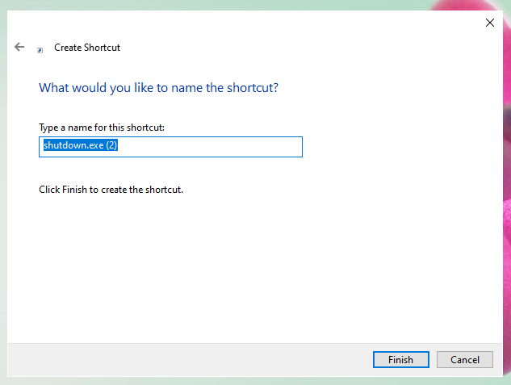
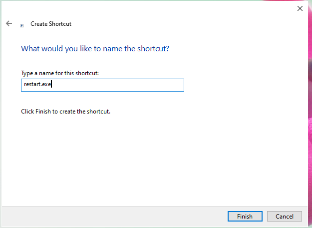

Rasanya males kalo kita harus matiin laptop/komputer pake cara ini :
Mending pake cara ini :
Cara yang diatas itu real bukan bohongan. kalian klik otomatis mati.
Pertama-tama siapkan dekstop kalian, lalu klik kanan dan pilih menu new lalu pilih shortcut. Maka kalian akan terantart ke halaman ini :
Lalu ketik dan klik next:
Lalu klik finish :
Untuk membuat restartnya kita lakukan hal yang sama seperti tadi, klik kanan lalu ke menu new dan pilih shortcut, jangan lupa ketik seperti ini dan klik next jika sudah diketik :
Ganti namanya :
Lalu klik finish jika namanya sudah diganti :

Apakah berhasil?
Jika tidak berarti kalian melakukan kesalahan saat di bagian mengetik.